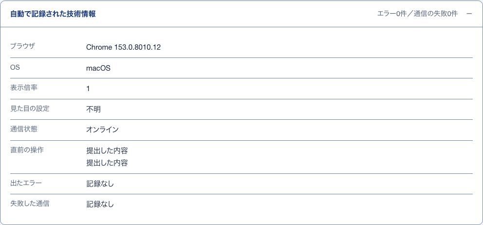

1処理の欄開いて見る
S46 届いた改善要望 ・ 押すもの: 「対応しない」 ・ 閉じる: やめる
中に出るもの
- 選んだN件をまとめて処理すること
- 理由の札（対応しないは 仕様どおり・他の要望と同じ・実現しない・その他）
- 廃棄のときは 誤送信・テスト投稿・内容が読み取れない・いたずら・その他
- 補足（その他を選んだときは必須）
中で押せるもの
- N件に実行する: 確認の小窓を出す
- やめる: 欄を閉じる
2まとめ処理の確認確かめる小窓
S46 届いた改善要望 ・ 押すもの: 「件に実行する」 ・ 閉じる: やめる
中に出るもの
- N件を「（対応しない・廃棄・元に戻す）」にします。よろしいですか。
中で押せるもの
- N件に実行する: 選んだ要望をまとめて処理する
- やめる: 小窓を閉じる
3処理の結果押したあとに出る
S46 届いた改善要望 ・ 押すもの: 「件をまとめて払い出す」 ・ 押すと保存や送信が起きるので、写真は載せていない
中に出るもの
- 払い出しN件／…の知らせ
- 表「まとめ処理の結果」（対象・実行内容・理由）
中で押せるもの
- 対象: 要望1件へ移る（→ S47）
- 失敗したN件をやり直す: 失敗した分を払い出し直す
4技術情報開いて見る
S47 要望1件 ・ 押すもの: 「自動で記録された技術情報」

中に出るもの
- ブラウザ
- OS
- 表示倍率
- 見た目の設定
- 通信状態（オンライン・オフライン）
- 直前の操作
- 出たエラー
- 失敗した通信
5渡す指示文開いて見る
S47 要望1件 ・ 押すもの: 「渡す指示文をそのまま読む」
中に出るもの
- 渡す指示文の全文（氏名とメールアドレスは含めない）
6指示文のコピー押したあとに出る
S47 要望1件 ・ 押すもの: 「Claude Code 用の指示文をコピー」
中に出るもの
- コピーしました。そのまま貼り付けてください。
中で押せるもの
- 渡す指示文を読む: 写す前に中身を開閉する
7取得コマンドのコピー押したあとに出る
S47 要望1件 ・ 押すもの: 「取得コマンドをコピー」
中に出るもの
- コピーしました。そのまま貼り付けてください。
中で押せるもの
- 取得コマンドを読む: 写す前に中身を開閉する
8払い出しの記録押したあとに出る
S47 要望1件 ・ 押すもの: 「払い出し済みにする」 ・ 押すと保存や送信が起きるので、写真は載せていない
中に出るもの
- 渡した日時とそのときの内容を控える
- 未対応なら対応中に進む
- 払い出しの履歴に1件積む
9対応状況の更新押したあとに出る
S47 要望1件 ・ 押すもの: 「対応状況を保存する」 ・ 押すと保存や送信が起きるので、写真は載せていない
中に出るもの
- 対応状況を更新しました。
- 最後に更新した人と日時
10この要望の扱い確かめる小窓
S47 要望1件 ・ 押すもの: 「対応しないにする」 ・ 閉じる: やめる
中に出るもの
- この要望を「（対応しない・重複・廃棄）」にします。
中で押せるもの
- 対応しないにする など: 選んだ扱いにし、操作の履歴に積む
- やめる: 小窓を閉じる